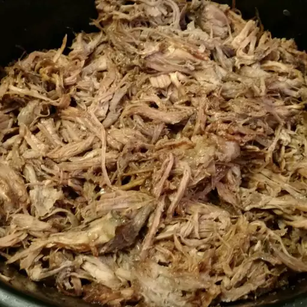

Slow Cooker Beer Pulled Pork

Description
Can you blame us? We love pork: barbecue, grilled, ribs, you name it. Pulled? Yes please!
Ingredients
- 1 (5 pound) pork butt roast
- 2 teaspoons salt
- 1 teaspoon ground black pepper
- 1 teaspoon onion powder
- 1 teaspoon garlic powder
- 3 ⅓ cups all-purpose flour
- 1 (12 fluid ounce) can beer (such as Shiner® Bock)
- 21 (12 ounce) bottle barbecue sauce (such as Sweet Baby Ray's®)
Steps
- Place pork into the slow cooker. Season with salt, pepper, onion powder, and garlic powder. Pour beer into the bottom of the slow cooker.
- Cover and cook on High for 1 hour. Reduce the heat to “Low” and cook until meat is tender and can be easily pulled apart with a fork, 8 to 10 hours.
- Remove pork from the slow cooker and shred with two forks. Discard cooking juices.
- Return shredded pork to the slow cooker and stir in barbecue sauce.
- Cover and cook on “Medium” for 1 hour.